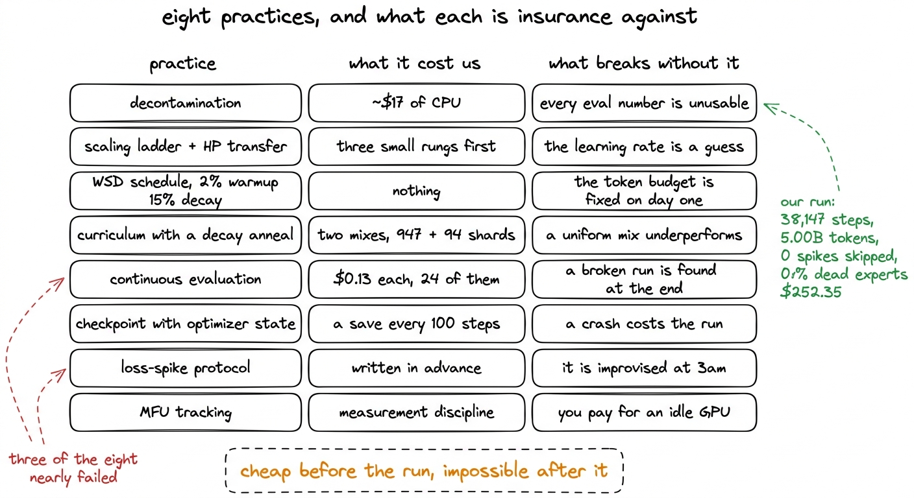
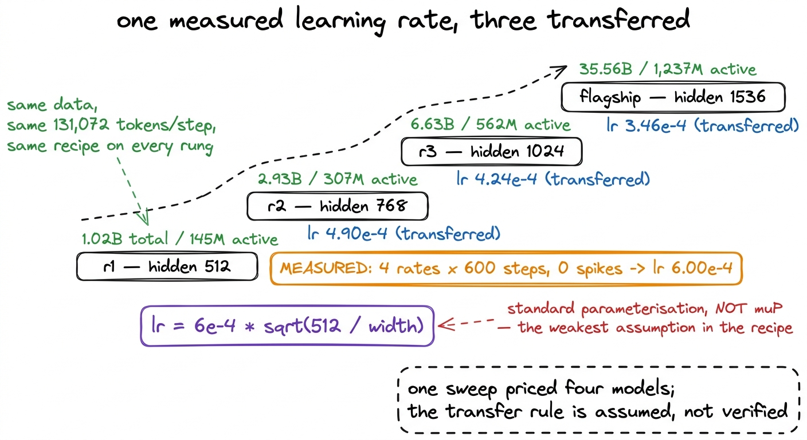
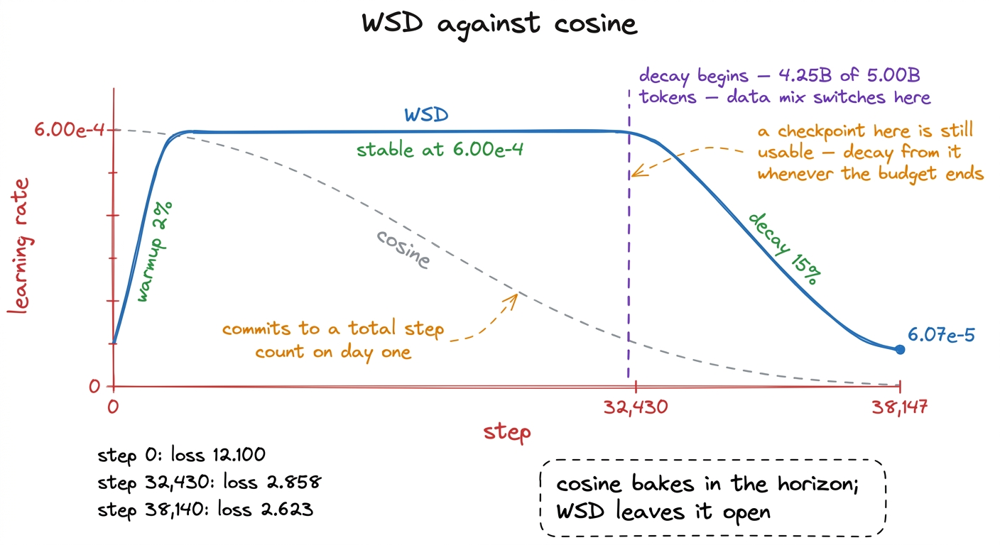
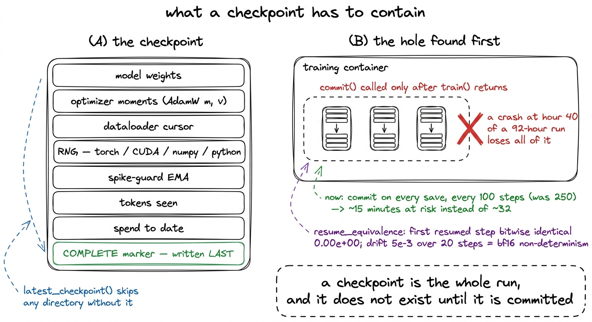
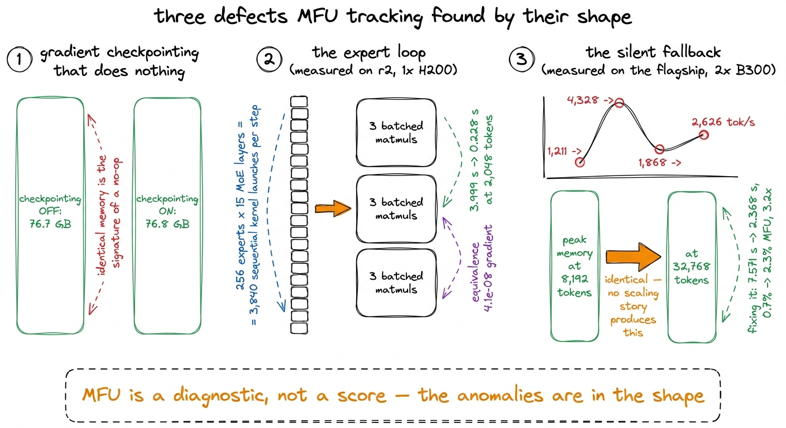

What makes a run lab-grade
Decontamination, a scaling ladder, a WSD schedule, a decay anneal, continuous evaluation, real checkpointing, a spike protocol and MFU tracking — eight practices, and what each one changes about the outcome.
A pretraining run either produces numbers that survive being questioned, or it does not. The difference is not the model, the data or the size of the GPU. It is a short list of practices, each of which costs money or time up front, and each of which changes what you are allowed to claim at the end.
The plan named eight of them before any compute was bought: benchmark decontamination, a scaling ladder with hyperparameter transfer, a warmup–stable–decay schedule instead of cosine, a data curriculum with a decay-phase anneal, continuous downstream evaluation against tokens, checkpointing with optimizer state, a written loss-spike protocol, and MFU tracking. All eight were implemented. For each, this chapter records what it cost us and what would have gone wrong without it. Three of the eight nearly failed anyway, and the chapter ends by naming them.

figure rendering · The eight practices adopted before any compute was bought, with the co1. Benchmark decontamination
Decontamination means removing, from the training corpus, any passage that overlaps the test set of a benchmark you intend to report. We built a 13-gram index over the test splits of eight evaluation sets and applied it before tokenization, with a written removal report. The index held 2,398,082 unique 13-grams in 24 MB and its self-check recovered 1,414 of 1,414 planted strings. The pass scanned 107,291,411 documents and removed 138,064, or 0.1287% of the corpus, for roughly $17 of CPU against a run cost of $252.35.
What makes the filter believable is not the total but the shape of the per-source rates.
| source | removal rate |
|---|---|
| finemath | 0.7239% |
| open-web-math | 0.6747% |
| code-python (StarCoder) | 0.2251% |
| fineweb-edu | 0.0856% |
| cosmopedia | 0.0296% |
| web-diverse (FineWeb) | 0.0280% |
Maths corpora shed about ten times as much as the web, which is what you would expect if the filter is matching real benchmark material rather than firing at random. A uniform rate across six very different sources would have suggested it was matching common English instead.
The practice also has to report its own limits. A benchmark row shorter than 13 words produces no 13-gram and cannot be filtered against, so TriviaQA is only 49% covered, 9,163 of its 17,944 rows being too short; PIQA is next lowest at 92% and five of the eight sets sit at 99 to 100%. Separately, HumanEval matched 88.78 times per indexed n-gram against HellaSwag's 0.02, and every document removed on that account was generic Python rather than leakage.1 The cause is normalisation. Stripping punctuation is right for prose and destructive for code: for i, a in enumerate(numbers): becomes for i a in enumerate numbers, and 13-word windows of de-punctuated Python are common idiom. Compounded by indexing HumanEval's test column, near-identical scaffolding across all 164 problems. Corpus damage was 0.225% of the code corpus, so no re-ingest was warranted, and the match count is not a contamination finding.
Without this, the 24-point evaluation series later in the book would be a set of numbers nobody has a reason to believe, including us.
2. A scaling ladder with hyperparameter transfer
A scaling ladder is a set of small models with identical architecture ratios and identical data, trained at increasing width, so that hyperparameters and throughput are measured cheaply before a large run commits money. Ours had three rungs, r1 at hidden 512, r2 at 768 and r3 at 1024, beneath a 35.56-billion-parameter flagship at hidden 1536.
The learning rate came from one sweep at r1's width: four rates, 600 steps each, zero loss spikes, giving 6.00e-4. Every other rung was set by 6e-4 * sqrt(512 / width): 4.90e-4 for r2, 4.24e-4 for r3, 3.46e-4 for the flagship.

figure rendering · The ladder. One learning rate was measured and three were derived fromThat is standard-parameterisation transfer rather than muP, and it is the weakest assumption in the recipe. We call it an assumption because we did not verify it: no rung above r1 completed a run against which the transferred rate could be checked.2 muP would reparameterise initialisation, learning rate and output scaling so that the optimal rate is invariant across width. Several components here — a latent MoE bottleneck, an aux-loss-free selection bias, a delta-rule attention with its own gate — have no published muP treatment, so the square-root rule was used and labelled.
What the ladder did pay for is everything else. Almost all of the MFU work in this book, attempts 1 through 15, was measured on r2, the rung above ours, at 307M active parameters on one H200, and the conclusions were then carried across to r1's run. The remaining attempt, the fused-dispatch cliff, was measured on the flagship, which never completed. The ladder also caught the fourth blocker in the released modeling code, an uninitialised timestep bias that fails non-deterministically: rung r2 trained normally while r1 returned NaN from step 0, from the same defect. A bug with that behaviour, met on a flagship rather than a ladder, costs a great deal more than it did here. And at equal token counts early in training, HellaSwag ordered as r3 28.4% > r2 27.6% > r1 27.0%, which is the ordering a ladder exists to confirm.
3. WSD instead of cosine
A cosine schedule decays the learning rate smoothly from its peak to near zero across a step count fixed in advance. Warmup–stable–decay replaces the middle of that curve with a flat stretch at the peak rate and compresses the decay into the final fraction of the run. Ours used 2% warmup, a stable phase at 6.00e-4, and a 15% decay beginning at step 32,430 of 38,147, at 4.25 billion tokens of 5.00 billion, ending at 6.07e-5.

figure rendering · The schedule we ran. The flat stable phase means the total token budgeWhat WSD costs is nothing measurable. What it buys is that the total step count does not have to be chosen before the run begins, because any checkpoint on the plateau is a legitimate starting point for a decay.
That property mattered more than we expected. r2 and r3 were stopped part-way, at 75% and 50% of their token budgets, when the compute account was disabled. Under cosine, a run stopped at 50% leaves a model frozen mid-descent at a high learning rate. Under WSD the stable-phase checkpoints are ordinary and a decay could be run from them at any time. We did not run those decays, so this is a property of the schedule rather than a result we can show.
4. A data curriculum with a decay-phase anneal
The corpus was built as two disjoint mixes rather than one. The stable phase draws from 947 shards of general web-heavy data, the decay phase from 94 shards with maths, code and reasoning upweighted, and the disjointness is asserted rather than assumed. The switch happens at the step the learning-rate decay begins, 32,430. The realised stable-phase mix tracked its target to three decimal places: fineweb-edu 59.5%, web-diverse 25.5%, code-python 10.0%, finemath 3.0%, open-web-math 2.0%.
The visible effect of the anneal is in held-out perplexity, which fell across the run from 22.65 at 1.691 billion tokens to 13.61 at the end, a 40% reduction, with the steepest part of that fall after step 32,430: 15.84 at 4.273B, then 14.27, 13.74 and 13.61. Final perplexity by source runs from 5.42 on code-python to 37.74 on web-diverse.
The cost of this practice is the bookkeeping, and the bookkeeping is where it nearly went wrong. A string-splitting bug in build_mixes rebuilt shard names as source + "-" + stem.split("-",1)[1], which mangles any hyphenated source name: fineweb-edu-w000-s0000 became fineweb-edu-edu-w000-s0000. Four of six sources pointed at files that did not exist, and the loader silently renormalised onto the two that survived, so the entire stable phase would have trained on 100% finemath while the telemetry reported a healthy six-source mix.
5. Continuous downstream evaluation
Evaluating once, at the end, tells you what you got. Evaluating continuously tells you whether the run was ever working. We ran the suite every roughly 1,000 steps on a separate A100 at about $0.13 per evaluation, which across the 24 points of r1's series comes to a little over three dollars against a $252.35 run: HellaSwag, PIQA, ARC-Challenge, WinoGrande and MMLU from the decontaminated set, plus held-out perplexity from tail shards, on frozen seed-0 500-example subsets.3 Scoring is length-normalised multiple choice with RIGHT padding. The model is causal, so left-padding would make it condition on pad tokens before reaching the question. The datasets library is pinned to 2.21.0 because 3.x removed script datasets. GSM8K and HumanEval are post-training benchmarks and were deliberately not run on a base model.
Across those 24 points, HellaSwag moved from 0.270 to 0.334 and PIQA from 0.608 to 0.634, while WinoGrande, MMLU and ARC-Challenge stayed near 0.51, 0.29 and 0.26 throughout.
Those curves are the reason we can say something specific about the flat benchmarks. A single end-of-run measurement of MMLU at 0.290 is indistinguishable from a run that broke on day two. Twenty-four points flat from 1.691 billion tokens onwards say something different: at 145M active parameters and 5 billion tokens, these capabilities are below the boundary of what the scale reaches. That is a statement about the model's size, available only because the evaluation ran against tokens rather than at the end.
6. Checkpointing with optimizer state
A checkpoint that holds only the weights is not a resume point. Ours holds the model, the optimizer moments, the dataloader cursor, the RNG state, the spike-guard EMA, the tokens seen and the spend to date, with a COMPLETE marker written last so a half-written directory is skipped rather than loaded.

figure rendering · The contents of a checkpoint, and the defect that meant none of them wTwo things here are worth carrying. The first is that the durability hole was invisible from the training logs. ckpt_vol.commit() was called only after train() returned, so every checkpoint lived in the dying container's view of the volume, and the run would have reported saving them correctly right up to the moment it lost them. The interval was also tightened from 250 steps to 100, putting about 15 minutes of work at risk instead of about 32.
The second is that resume correctness was tested rather than assumed. resume_equivalence trains past a checkpoint twice and compares per-step losses, and it found a real off-by-one: the checkpoint was written after opt.step() but labelled with the step just finished, so a resume re-ran that step and reproduced the original trace shifted by one. After the fix, the first resumed step is bitwise identical at 0.00e+00 and drift over 20 steps stays at 5e-3, which is bf16 non-determinism. r1 kept 15 checkpoints under a retention rule of the last three plus every 5,000th.4 Retention is not optional at scale. The flagship's checkpoints are about 213 GB each, and at the original 250-step interval, keeping every one of them would have come to 128 PB.
7. A written loss-spike protocol
The protocol specifies in advance what counts as a spike, what happens when one is detected — skip the batch, or roll back to the last good checkpoint — and what state the decision depends on. The spike-guard EMA is part of the checkpoint so that a resumed run does not restart the detector.
Our run skipped zero spikes across all 38,147 steps. The protocol was never exercised, which is the correct thing to report about insurance: we paid for it, we did not need it, and we cannot claim it saved the run.
What it did surface is that the protocol's assumptions change when the model is sharded. On the flagship's two-card FSDP2 setup, each rank decided independently whether to skip a step. One rank calling opt.step() while another does not diverges the weights, and the next all-gather mixes two models into one. The fix is to all-reduce the loss before the guard sees it. That bug produces a completed run and a model that is quietly wrong, with no error anywhere.
The related lesson is about the gates alongside the protocol. Two thresholds were dangerous once the watchdog could stop a run. MFU_FLOOR = 0.20 fired on every step of every healthy run, because measured MFU here is 5 to 8%. EXPERT_COLLAPSE was fatal on a single snapshot of a metric whose healthy trajectory passes through 69 to 95% dead experts in the first thirty steps, as we saw when the router collapsed. Collapse now requires five consecutive reports and the floor is 3%. Half of the 24 failure-injection tests assert that gates stay silent on healthy training, which is the harder half to write.
8. MFU tracking
Model FLOPs Utilization is 6 x active_parameters x tokens_per_second / peak_FLOPs, the fraction of a GPU's arithmetic capability a run consumes. An H200 does roughly 989 TFLOP/s in bf16, well-tuned dense training reaches 40 to 55%, and our run sustained 2.4 to 2.5% at 27,600 to 28,900 tokens per second.
Tracked as one end-of-run number, that is a disappointment. Tracked continuously, it is a diagnostic, because MFU has shapes that only certain defects produce.

figure rendering · Three defects located by the shape of a throughput or memory curve ratAll three are defects that reading the source did not reveal. A gradient_checkpointing_enable() call that declares support, sets the flag, and is never invoked by the decoder loop looks correct in the code and shows up in the data as 76.7 GB against 76.8 GB with the feature off and on. The expert loop looked like an implementation detail and was 3,840 sequential kernel launches per step; batching it took step time from 3.999 s to 0.228 s at 2,048 tokens, a 17.5x improvement that moved r2's MFU from 0.1% to 4.1%. The fused dispatch on the flagship silently reverted to that same loop above a hard-coded buffer cap, and announced itself only as a non-monotonic throughput curve and a peak memory that did not move when the batch grew fourfold.
The discipline that makes any of this readable is comparability. MFU is measured against each card's own peak, so it is only comparable across runs on the same hardware. One of our own fits mixed two H200 measurements with a B200 one and produced active^-0.32, an exponent implying that larger models are less efficient, which is an artefact rather than a finding.5 Normalising r3's 3.6% to the H200's peak gives about 8.2%, above r2, which restores positive scaling. The corrected two-point fit on matched hardware is active^0.35, and the flagship figure derived from it, 12.5%, is an extrapolation rather than a measurement.
Which three nearly failed
Of the eight, five worked as designed. Three did not.
Checkpointing was the closest. Every save reported success, none were durable, and the failure would have arrived as an ordinary crash forty hours in with nothing to resume from.
The data curriculum was next. The manifest bug would have produced a completed 5-billion-token run on a single maths corpus, with a mix report showing all six sources on target.
The gates around the spike protocol and MFU tracking were third, and the most instructive, because the danger came from the safeguards themselves. A floor set at 0.20 for a metric whose healthy value is 0.025, and a fatal collapse check on a metric whose healthy trajectory passes through 94.5% dead experts, would have terminated every correct run in this project the moment the watchdog gained the ability to act.
None of the three announce themselves. They do not crash, they do not log an error, and they do not change the loss curve in a way anyone would notice. Each was found by a measurement taken for a different reason: a resume test, a shard-count assertion, a dry run of the watchdog against healthy telemetry. That is the argument for all eight practices. They are not there to make the run better. They are there so that when the run is wrong, something says so.